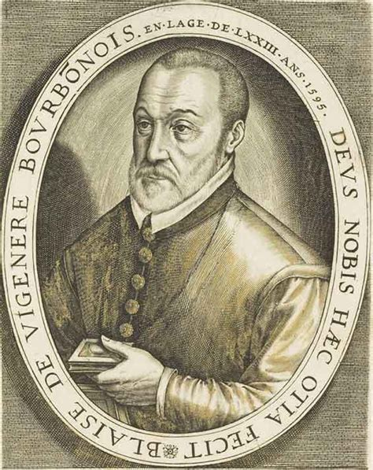
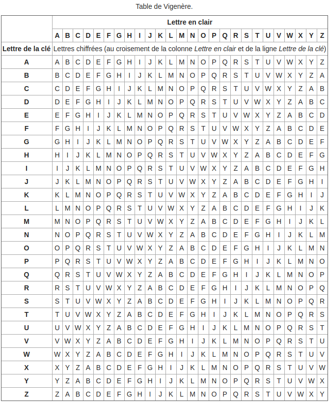
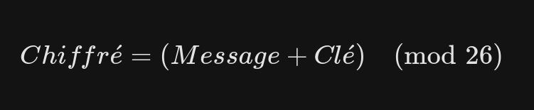

Vigenère Cipher - Plaintext Key
~ 8 min read
The Vigenère cipher is a symmetric polyalphabetic substitution encryption1 system. It was invented by the French diplomat Blaise de Vigenère2 in the 16th century.
This encryption was used to protect sensitive communications by making frequency analysis significantly harder, earning it the nickname "Le chiffre indéchiffrable" (The Indecipherable Cipher). It was eventually "broken" mathematically by Charles Babbage and Friedrich Kasiski in the 19th century, proving that even the most complex encryption systems can be vulnerable to well-designed attacks. Since then, the Vigenère cipher no longer offers any modern security.

How does it work?
The Vigenère cipher uses an encryption key consisting of a word or phrase. Each letter of the plaintext is encrypted using the corresponding letter of the key, according to a polyalphabetic substitution table (the Vigenère square). This makes frequency analysis difficult because a single letter in the plaintext can be replaced by several different letters depending on its position and the key used.

> Example of Vigenère encryption:
To encrypt the message "HELLO" with the key "WORLD", we use the Vigenère table:
- Start with the plaintext "HELLO"
- Take the key "WORLD"
- Use the Vigenère square to encrypt each letter by finding the intersection of the message letter and the corresponding key letter. For example, the letter "H" from the message and "W" from the key gives "D" because if you follow row H to column W, you find "D".
- If the key is shorter than the message, it repeats to cover the entire length. (e.g., "WORLD" becomes "WORLDW")
- If the key is longer than the message, it is truncated. (e.g., "WORLD" becomes "WORL")
- Conversely, to decrypt "DSCWR" with the key "WORLD", you find the intersection in reverse to retrieve the original letters.
This results in the ciphertext "DSCWR". We can see how polyalphabetic substitution replaces each plaintext letter with a different letter based on the key.
The core of the Vigenère cipher: the mathematical formula

Each letter is replaced by its position in the alphabet (A=0, B=1, ..., Z=25).
You can modify the formula according to your needs (Encrypt/Decrypt). A small tip: if you want to isolate the Message, be mindful of negative results, which don't directly map to valid letter indexes without adding 26.
Therefore, even without a physical table, we can encrypt and decrypt messages using these mathematical principles.
Vigenère Cipher Implementation (Java)
public class Vigenere {
public static String execute(String text, String key, boolean encrypt) {
if (key == null || key.isEmpty()) return text;
StringBuilder result = new StringBuilder();
int keyOffset = 0; // To ignore spaces in key progression
int direction = encrypt ? 1 : -1;
for (int i = 0; i < text.length(); i++) {
char c = text.charAt(i);
if (Character.isLetter(c)) {
// Set base (A or a) to handle case sensitivity
char base = Character.isUpperCase(c) ? 'A' : 'a';
// Get corresponding character in the key
char keyChar = key.charAt(keyOffset % key.length());
int keyValue = Character.toUpperCase(keyChar) - 'A';
// Apply the unique mathematical formula
// (c - base) extracts the 0-25 index
int index = (c - base + (direction * keyValue) + 26) % 26;
result.append((char) (base + index));
keyOffset++;
} else {
// If it's a space or punctuation, add it as is
result.append(c);
}
}
return result.toString();
}
public static void main(String[] args) {
String msg = "HeLlO WoRlD!";
String key = "world";
String encoded = execute(msg, key, true);
System.out.println("Encrypted: " + encoded);
String decoded = execute(encoded, key, false);
System.out.println("Decrypted: " + decoded);
}
}
Decrypted: HeLlO WoRlD!
Note: The first time I tried to code a Vigenère program, my Java code was about 180 lines long.
Vulnerabilities
While more secure than monoalphabetic methods, the Vigenère cipher has several weaknesses:
- Key Length Analysis: If the key is short and repetitive, techniques like the Index of Coincidence can determine its length.
- Brute Force Attack: For short keys, it is possible to try every possible combination.
- Frequency Analysis: Once the key length is known, frequency analysis can be applied to each "sub-text" created by the key's rotation.
Conclusion
The Vigenère cipher played a vital role in the history of cryptography, representing a significant leap forward from monoalphabetic methods. Although it was considered unbreakable for centuries, its vulnerability to modern attacks makes it primarily a subject of interest for historians and crypto-enthusiasts today.